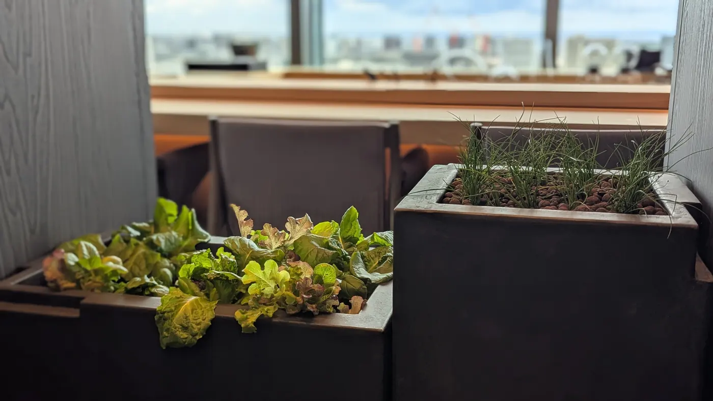

Grow herbs, greens, and edible flowers where guests can see them.
A farm-to-table story with practical kitchen value.

Overview
Imagine harvesting fresh basil, shiso, coriander, or dill steps from your kitchen — and having your guests watch it happen. A hydroponic tower or green wall in your restaurant gives you ultra-fresh ingredients with zero food miles, a compelling farm-to-table story for your menu, and a visual feature that diners notice and remember. We design compact growing systems that fit restaurant environments and produce consistent harvests of herbs, leafy greens, and edible flowers.
Possible formats
A single tower near the entrance or dining area as a conversation piece and ingredient source. A compact green wall in view of diners. A back-of-house growing setup optimized for kitchen production. We tailor the setup to your menu, space, and aesthetic.
Consultation
We start with a visit to your restaurant to understand your menu, space, and goals. From there, we propose a system and planting plan matched to what your kitchen actually uses. Ongoing maintenance ensures consistent production without adding to your team’s workload.